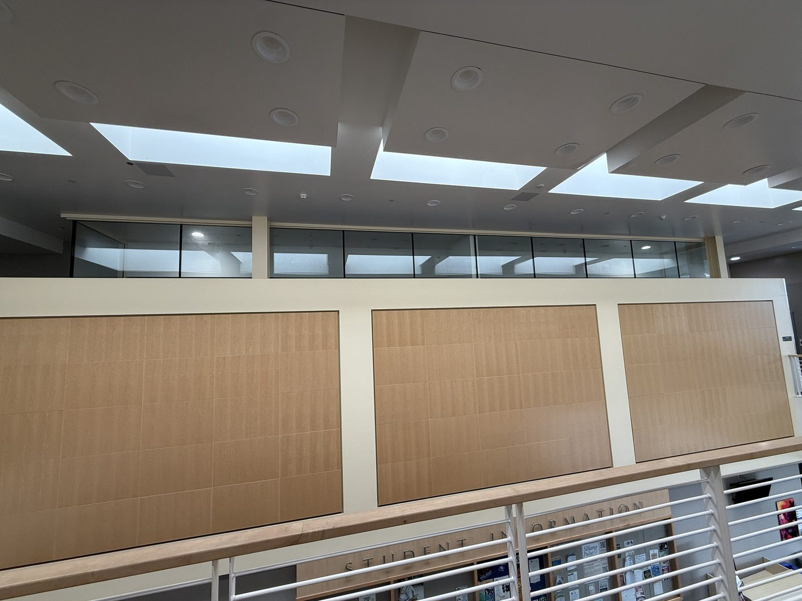

Three portraits for the three panels above Student Information. Drag the slider to see the wall today and with the mural.

TODAYWITH MURALPainted on rigid panels cut to each frame, so the acoustic wood stays untouched and the art can move with the college.
Warm ochre, deep navy and cream tie the three portraits together, with a caption plaque in the same corner of each.
Professional acrylics with a UV-protective clear coat. Sketch approval before any paint goes on.